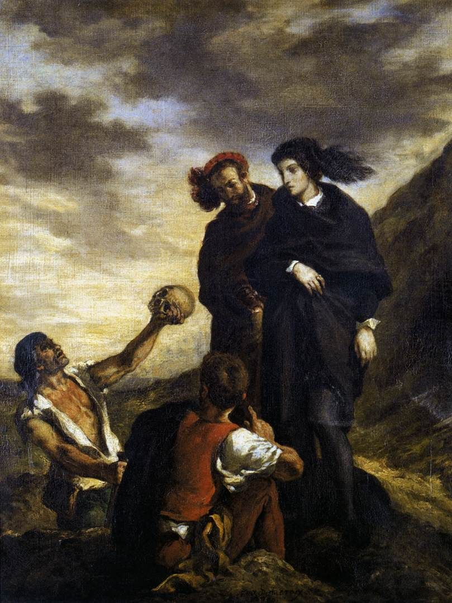

I
Ertelemeye dair yaygın açıklamalar iki yöne ayrılır. Biri ahlaki bir açıklamadır: Erteleyen kişi tembeldir, iradesizdir, disiplinsizdir. Öbürü teknik bir açıklamadır: Erteleyen kişi zamanını iyi yönetemiyor, öncelik belirleyemiyor, görevleri küçük parçalara bölemiyordur. Birincisi suçluluk üretir, ikincisi takvim uygulamaları, verimlilik teknikleri ve yeni listeler. İkisinin de ortak bir eksiği vardır: Erteleyen kişinin çoğu zaman ne yapması gerektiğini çok iyi bildiğini, ve tam da bildiği halde yapamadığını açıklamazlar.
Psikanaliz soruyu başka bir yerden sorar. Bir insan istediğini söylediği bir şeyi sürekli yapmıyorsa, belki de o şeyi, ya da onu yapmanın sonucunu, istemeyen bir yanı vardır. Ya da o şeyi yapmanın, farkında olmadığı bir korkuyu, bir yasağı, bir kaybı harekete geçirdiği bir yanı. Erteleme, bu açıdan bakıldığında, bir eksiklik değil, bir çözümdür: Bir çatışmayı, karar vermeden, askıda tutmanın bir yolu. Yapılmamış iş, her şeyin hâlâ mümkün olduğu bir yer olarak kalır.
II
Edebiyatın en ünlü ertelemecisi Hamlet’tir. Babasının hayaleti ona, amcası Claudius’un babasını öldürdüğünü ve annesiyle evlenerek tahtı ele geçirdiğini söyler, ve ondan intikam almasını ister. Hamlet yemin eder. Ama oyunun beş perdesi boyunca, bu edimi sürekli erteler: Hayaletin doğru söyleyip söylemediğini sınamak ister, bir oyun sahneler, Claudius’u dua ederken bulduğunda onu öldürmez, çünkü dua eden birini öldürmenin onu cennete göndereceğini düşünür. Hamlet’in sorunu cesaretsizlik değildir; oyunun başka yerlerinde, Polonius’u perdenin arkasında bir an bile düşünmeden öldürür. Yapamadığı, tek bir şeydir.
Freud, Hamlet’in bu bekleyişini Düşlerin Yorumu’nda, ünlü bir dipnotta açıkladı. Hamlet, Freud’a göre, her şeyi yapabilir, yalnızca babasını öldürüp annesinin yanında onun yerini alan adamdan öç alamaz; çünkü bu adam, Hamlet’in kendi çocukluğunun bastırılmış dileklerini gerçekleştirmiştir. Claudius’u cezalandırmak, kendini cezalandırmak olurdu. Hamlet’i durduran, intikamın önünde duran bir dış engel değil, kendi arzusunun Claudius’ta gördüğü yansımasıdır.1
Lacan, 1959’da, altıncı seminerinde, Hamlet’e yedi derslik uzun bir okuma ayırdı ve Freud’un yorumunu bir adım ileri götürdü. Lacan’a göre Hamlet’in tragedyası, arzunun tragedyasıdır: Hamlet, kendi arzusunu bulamayan, hep Başka’nın, özellikle annesinin arzusuna takılı kalan bir öznedir. Kendi zamanında değil, Başka’nın zamanında yaşar; harekete geçmek için her zaman bir başkasının işaretini, bir başkasının saatini bekler. Oyunun sonunda Hamlet edimi gerçekleştirir, ama ancak kendisi ölümcül biçimde yaralandıktan sonra, artık kaybedecek hiçbir şeyi kalmadığında.2 Ertelemenin en derin biçimi belki budur: Kendi arzusunun sahibi olmak yerine, onu bir başkasından beklemek.
III
Rus edebiyatının en ünlü ertelemecisi ise İvan Gonçarov’un 1859’da yayımlanan romanının kahramanı Oblomov’dur. Roman, Oblomov’un bir sabah kanepesinden kalkmaya karar vermesiyle başlar; romanın ilk bölümü bitene kadar kalkamaz. Oblomov’un önemli işleri vardır, çiftliğinin yönetimi, mektuplar, kararlar; hepsini yarına bırakır. Rus eleştirmen Nikolay Dobrolyubov, aynı yıl yazdığı ünlü bir yazıda, “Oblomovluk nedir?” diye sordu ve Oblomov’u bir dönemin, bir sınıfın hastalığının simgesi olarak okudu. Ama roman, Oblomov’un kanepesinin bir rahatlık olduğu kadar bir sığınak olduğunu da gösterir: Oblomov’un rüyasında, çocukluğunun, annesinin her ihtiyacını karşıladığı, hiçbir şeyin istenmediği bir dünyanın sıcaklığı vardır. Kanepeden kalkmak, bu dünyadan çıkmak demektir.
Oblomov, ertelemenin bir başka yüzünü gösterir: Bir işi yapmak, bir talebe yanıt vermektir, ve bazen insanın yanıt vermek istemediği şey, işin kendisi değil, o talebin kendisidir. Freud, 1908’de yazdığı “Karakter ve Anal Erotizm” makalesinde, bazı kişilerde düzenlilik, tutumluluk ve inatçılığın bir arada görüldüğünü ve bunun kökeninin, çocuğun bedenine, dışkısına, yani verip vermemeye, tutup bırakmaya dair erken bir mücadelede bulunduğunu ileri sürdü.3 Çocuk, annesinin talebine, istediği zaman vererek ya da vermeyerek, ilk kez bir güç sahibi olur. Yetişkinlikteki bazı ertelemeler, bu eski sahnenin bir tekrarı gibidir: Bir öğretmenin, bir patronun, bir ailenin, bir eşin beklediği şey, tam da beklendiği için verilmez. Erteleme, sözle söylenemeyen bir hayırdır.
IV
Ertelemenin belki de en yaygın biçimi, mükemmeliyetçilikle iç içe geçmiş olanıdır. Bir işi bitirmek, onu dünyaya sunmak, onu değerlendirmeye açmak demektir. Yazılmamış bir tez kusursuzdur; teslim edilmemiş bir proje hâlâ olağanüstü olabilir; başlanmamış bir kitap, bütün kitapların en iyisidir. Erteleyen kişi, çoğu zaman, yapacağı şeyin yeterince iyi olmayacağından değil, yapacağı şeyin yalnızca bir şey olacağından, sonsuz olanaklardan birine indirgeneceğinden korkar. Bir edim, sınırlıdır; erteleme ise sınırsızlığı korur.
Lacan, nevrozun iki büyük biçimini, arzuyla kurdukları ilişki bakımından ayırır. Obsesyonel özne, arzusunu olanaksız kılarak korur; isteğine her yaklaştığında yeni bir koşul, yeni bir hazırlık, yeni bir kontrol bulur. Histerik özne ise arzusunu karşılanmamış tutarak korur; tam elde edeceği anda başka bir şey ister. Lacan, 1953’teki Roma konuşmasında, obsesyonel öznenin bekleyişini Hegel’in efendi ile köle diyalektiğine bağlar: Obsesyonel, efendinin ölümünü bekler; gerçek hayatı ancak o öldükten sonra, özgür kaldığında başlayacaktır. Ama efendi ölmez ve bekleyiş, hayatın kendisine dönüşür.4 Çok erteleyen birinin kendine sorabileceği sorulardan biri budur: Neyin bitmesini, kimin gitmesini, hangi iznin verilmesini bekliyorum?
V
Bu açıklamaların hiçbiri, herkesin ertelemesinin aynı nedene dayandığını söylemez. Psikanalizin ilk öğretisi, tam tersine, her semptomun tekil olduğu, bir insanın ertelemesinin ancak onun kendi tarihi içinde anlam kazandığıdır. Ama bazı sorular, bir ertelemenin ne söylediğini duymaya yardım edebilir. Neyi erteliyorum, ve neyi hiç ertelemiyorum? Ertelediğim işi bitirirsem ne olur, kim ne der, neyi kaybederim? Bu işi kimin için yapıyorum? Bitirdiğimde, ondan sonra ne gelecek?
Bu sorular bazen beklenmedik yanıtlar getirir. Bir öğrenci, tezini bitirdiğinde ailesinin evinden, onların beklentisinden kurtulacağını ve bundan hem korktuğunu hem bunu istediğini fark eder. Bir yazar, kitabını bitirdiğinde annesinin onu okuyacağını ve ondan hiç söylemediği bir şeyi öğreneceğini fark eder. Bir çalışan, terfi için gereken raporu hazırlamadığını, çünkü terfinin onu babasıyla aynı yere, sevmediği bir babanın yerine koyacağını fark eder. Bu fark edişler, ertelemeyi bir anda bitirmez; ama ona başka bir ad verir. Erteleme artık bir tembellik değil, bir sorudur.
Erteleme bazen daha derin bir şeyin, bir depresyonun, bir kaygı bozukluğunun, dikkat ve odaklanmayla ilgili bir güçlüğün de işareti olabilir. Bir insan hayatının önemli alanlarında, iş, okul, ilişkiler, sürekli olarak yapamadığı şeylerin ağırlığı altında eziliyorsa, bunu tek başına çözmeye çalışmak yerine bir uzmanla konuşmak gerekir. Psikanalitik çalışma, ertelemeyi bir teknikle ortadan kaldırmayı vaat etmez. Önerdiği şey, ertelemenin taşıdığı arzuyu ve korkuyu duymak, ve insanın kendi arzusunun sahibi olabileceği, Hamlet gibi Başka’nın saatini beklemek yerine kendi saatinde harekete geçebileceği bir yeri birlikte aramaktır.
Notlar
- S. Freud, Die Traumdeutung, Leipzig ve Viyana: Deuticke, 1900, beşinci bölüm, Oidipus üzerine yazılan bölümdeki Hamlet çözümlemesi. Freud’un yorumu, sonradan Ernest Jones’un Hamlet and Oedipus (1949) kitabında ayrıntılı biçimde geliştirilmiştir. ↩︎
- J. Lacan, Le Séminaire, Livre VI: Le désir et son interprétation (1958–1959), yay. haz. J.-A. Miller, Paris: La Martinière / Le Champ freudien, 2013, Mart–Nisan 1959 tarihli Hamlet dersleri. ↩︎
- S. Freud, “Charakter und Analerotik” (1908), Psychiatrisch-Neurologische Wochenschrift, 9. ↩︎
- J. Lacan, “Fonction et champ de la parole et du langage en psychanalyse” (1953), Écrits, Paris: Seuil, 1966. Lacan obsesyonel öznenin, efendinin ölümünü bekleyen köle konumunda, ertelenmiş bir hayat yaşadığını söyler. ↩︎
Kaynakça
- Dobrolyubov, N. A. (1859). Chto takoye oblomovshchina? [Oblomovluk nedir?]. Sovremennik.
- Freud, S. (1900). Die Traumdeutung. Leipzig ve Viyana: Deuticke.
- Freud, S. (1908). Charakter und Analerotik. Psychiatrisch-Neurologische Wochenschrift, 9.
- Gonçarov, İ. A. (1859). Oblomov. St. Petersburg.
- Jones, E. (1949). Hamlet and Oedipus. London: Gollancz.
- Lacan, J. (1966). Fonction et champ de la parole et du langage en psychanalyse. Écrits içinde. Paris: Seuil.
- Lacan, J. (2013). Le Séminaire, Livre VI: Le désir et son interprétation (1958–1959). Paris: La Martinière / Le Champ freudien.
- Shakespeare, W. (1603). Hamlet. London.